To apply styles to the chart:
1. Right-click on the chart and select the Chart Properties from the context menu.
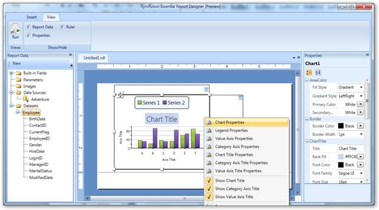
Figure 55: Chart Properties
2. In the Chart Properties dialog, select any of the following:
· General to change the chart type and ToolTip of the chart.
· Border to change the border style and border width of the chart.
· Fill to set background color of the chart.
· AreaColor to set color of the chart area color.
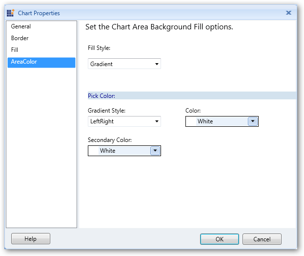
Figure 56: Chart Properties Dialog
3. Click OK.
4. To apply legend styles to the chart, right-click on the chart and choose Legend Properties.
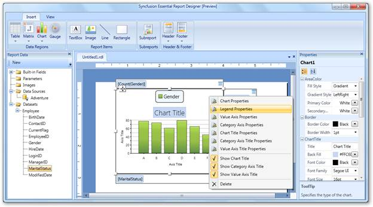
Figure 57: Legend Properties
5. The Legend Properties dialog will open. Select any of the following:
· General to change the position, color, or visibility of the legend when the chart is initially run.
· Font to set the font color, font family, font size, and font style of the legend.
· Border to set the border color and border width of the legend.
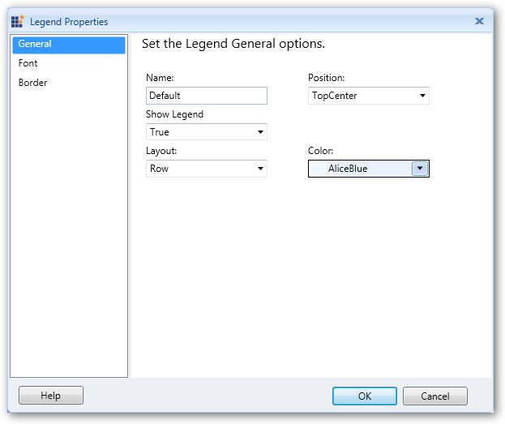
Figure 58: Legend Properties Dialog
6. Click OK.
7. To apply styles to the value axis of the chart, right-click on the chart and choose Value Axis Properties.
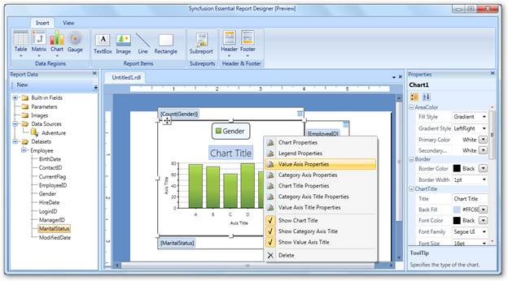
Figure 59: Value Axis Properties
8. The Value Axis Properties dialog will open. Select any of the following:
· General to change the direction, line style, line width, and line color of the value axis.
· Label to set the font family, font size, font angle, font style, font color, and visibility of the value axis label.
· Tick to set the style, width, color, and length of the value axis tick, and set the visibility of major and minor tick marks.
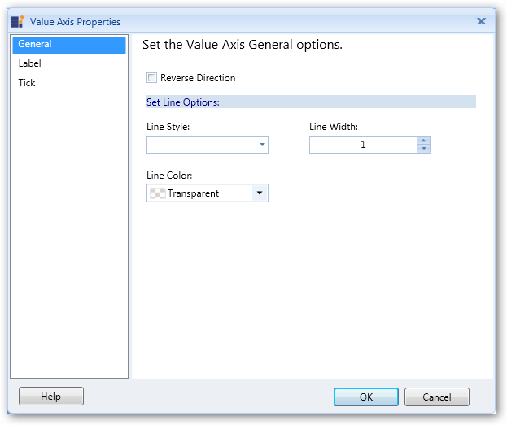
Figure 60: Value Axis Properties Dialog
9. Click OK.
10. To apply category axis styles to the chart, right-click on the chart and select Category Axis Properties.
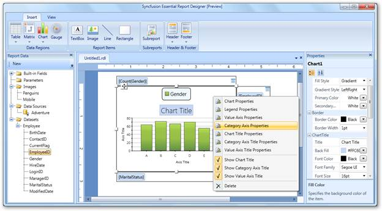
Figure 61: Category Axis Properties
11. The Category Axis Properties dialog will open. Select any of the following options:
· General to change the direction, line style, line width, and line color of the category axis.
· Label to set the font family, font size, font angle, font style, font color, and visibility of the category axis label.
· Tick to set style, width, color, and length of the ticks in the category axis, and set the visibility of the major and minor tick marks.
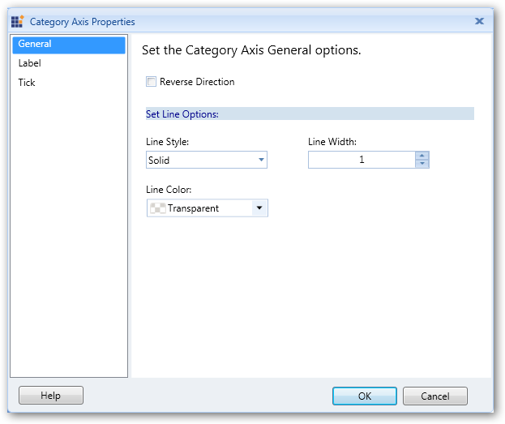
Figure 62: Chart Category Axis Properties Dialog
12. Click OK.
13. To apply title styles to the chart, right-click on the chart and select Chart Title Properties.
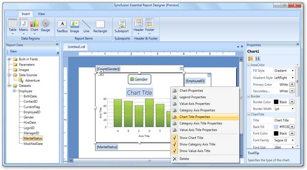
Figure 63: Chart Title Properties
14. In the Chart Title Properties dialog, select General, and set title, font family, font size, font color, font style, and background color for the chart as needed.
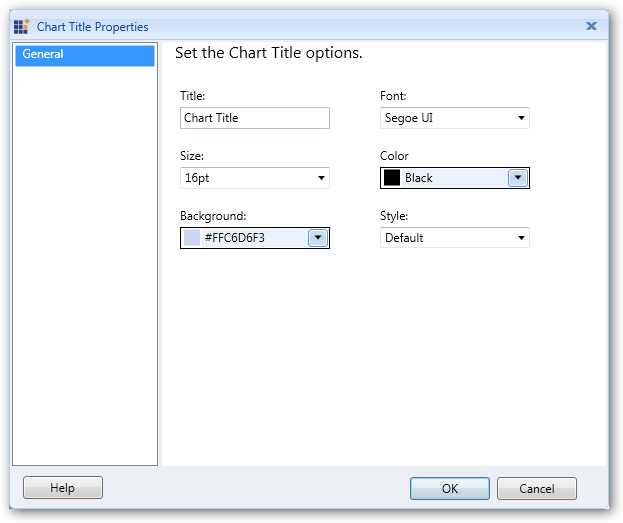
Figure 64: Chart Title Properties Dialog
15. Click OK.
16. To apply styles to the category axis title, right-click on the chart and select Category Axis Title Properties.
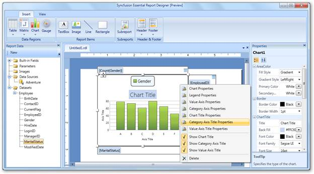
Figure 65: Category Axis Title Properties
17. In the Category Axis Title Properties dialog, select General and set the title, font family, font size, font color, font style, and alignment for the category axis title as needed.
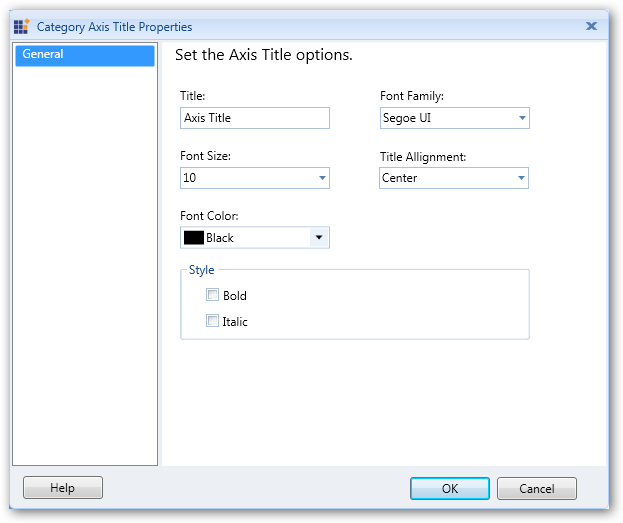
Figure 66: Category Axis Title Dialog Properties Dialog
18. Click OK.
19. To apply styles to the value axis title, right-click on the chart and select Value Axis Title Properties.
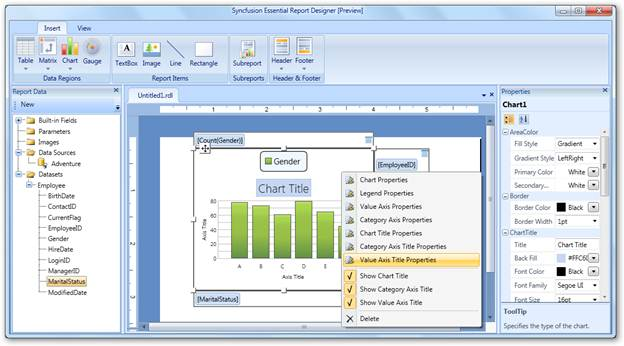
Figure 67: Value Axis Title Properties
20. In the Value Axis Title Properties dialog, Click General and set the title, font family, font size, font color, font style, and alignment for the value axis title.
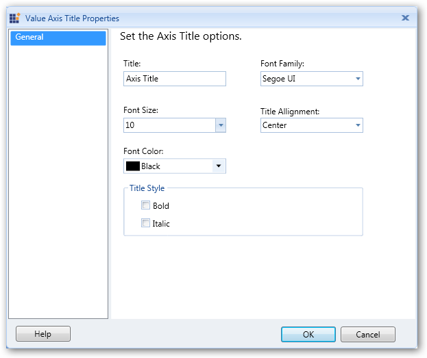
Figure 68: Chart Value Axis Title Properties Dialog
21. Click OK.
 Note: You can also change the Chart Properties
via the Properties grid by clicking on the chart. It will display the Properties
grid at the right of the Report Designer.
Note: You can also change the Chart Properties
via the Properties grid by clicking on the chart. It will display the Properties
grid at the right of the Report Designer.
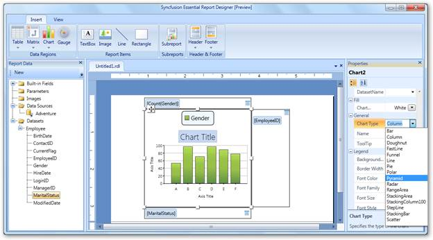
Figure 69: Seting Chart Properties via the Properties Grid
The following screenshot is a sample output for the pyramid chart type. You can get this by setting the chart type as Pyramid through the Properties grid.
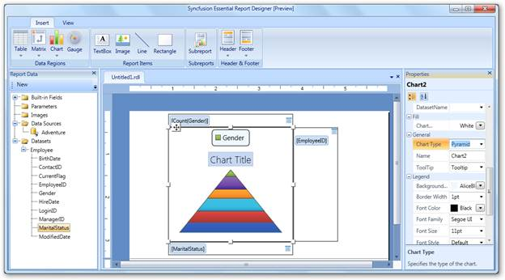
Figure 70: Seting Chart Type through the Properties Grid